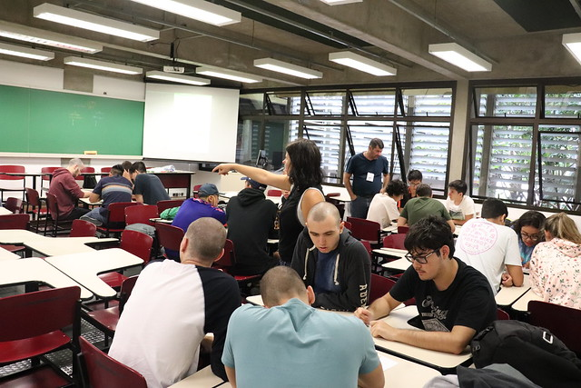
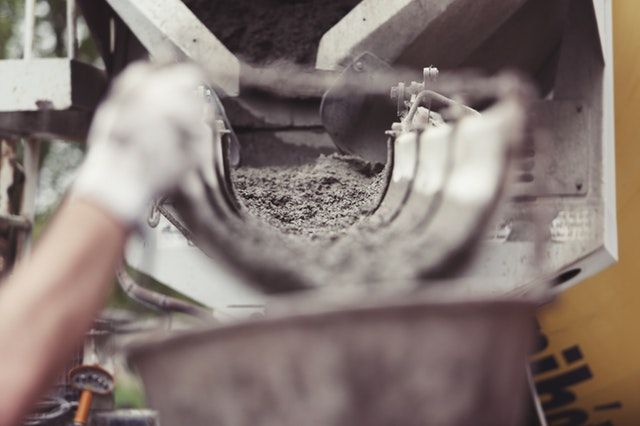

Iniciações Científicas

Mapeamento do Uso de Estratégias de Aprendizagem Ativa numa Escola de Engenharia

Aplicação de Probióticos Encapsulados em Barra de Fruta

Análise do Impacto de Ondas em Pontes Costeiras

Concreto de Ultra Alto Desempenho Reforçado com Fibra